PyCharmのインストール方法
PyCharmのインストール方法について説明します。PyCharmとはJetBrains社のPython専用の統合開発環境 （IDE）です。所謂、高機能なエディターのようなものです。全ての機能が搭載した「Professional」版と、無償の「Community」版があります。「Community」版はweb開発などができませんが、一般的な使用であれば問題ありません。今回はWindows10に無償の「Community」版をインストールします。なお2019のバージョン以降は64bit版しかないため、32bitのpcの方は旧バージョンの2018をインストールしましょう。
Pythonのインストール
まずはPythonをインストールしているか確認しましょう。もしまだインストールしていない場合、当サイトの下記のページを参考にしてインストールしてください。
インストールファイルのダウンロード
下記のリンクからPyCharmのダウンロードページを開きます。
-
最新版をダウンロード
ページ開いたら最新版のダウンロードページが表示されると思います。現時点（2020年7月）での最新版は「2020.1.3」です。真ん中のWindowsが青く選択されているのを確認して、右側の「Community」の下の「Download」をクリックして、「Community」版をダウンロードしてください。Macの方は「Mac」を選択してから「Download」をクリックしてください。
-
32bitのpcを使っていて旧バージョンのPythonをダウンロードしたい場合
32bitのpcの場合2018以前のバージョンしか対応していません。なのでその場合は「Version 2018.3」をダウンロードしてください。
ダウンロードページの左下にある「Other versions」という場所をクリックします。
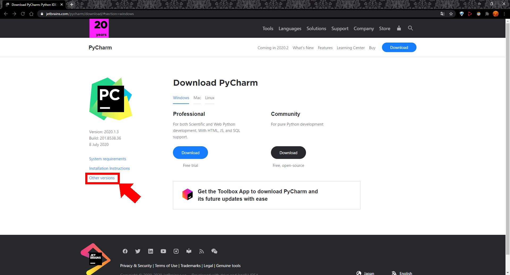
ページが表示されたら、下のほうにスクロールします。スクロールしバージョンを遡っていくと、ページ中段に「Version 2018.3」と書かれた場所があります。この「Version 2018.3」の右側の「PyCharm Community Edition」という欄の「2018.3.7 for Windows (exe)」をクリックしてダウンロードしてください。Macの方は「2018.3.7 for macOS (dmg)」をダウンロードしてください。
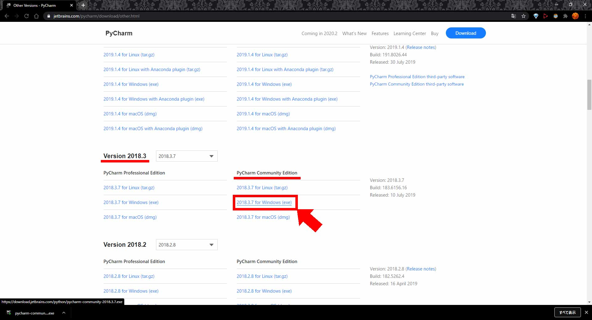
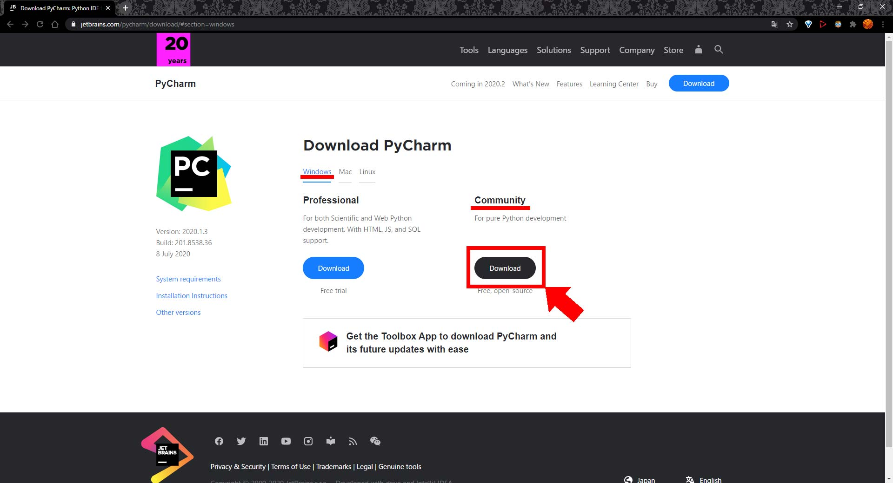
ダウンロードしたインストールファイルはデスクトップやダウンロードフォルダなど、任意の場所に保存してください。なお、ダウンロードが始まると下記のページに移動しますが、メールマガジンの購読フォームですので、する人はしてしない人は閉じてください。
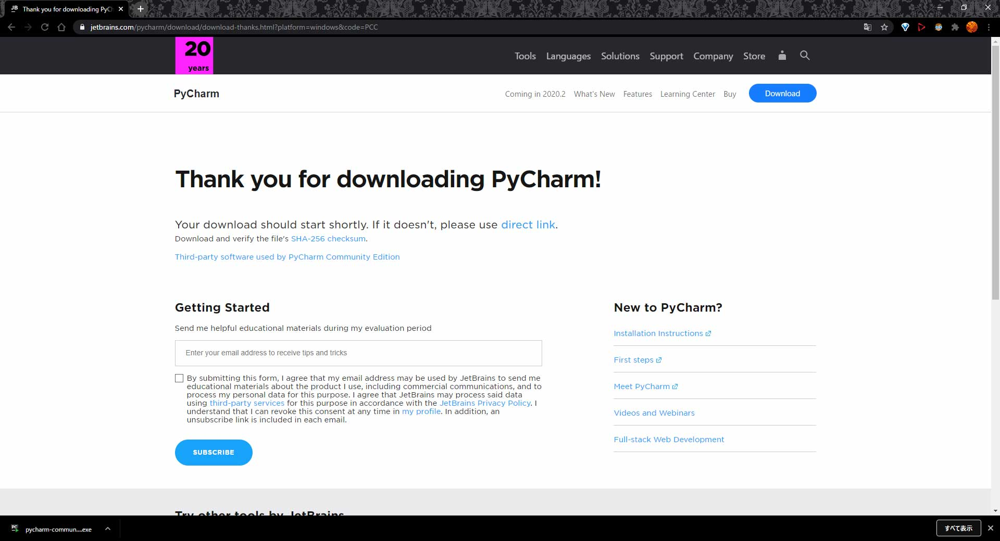
PyCharmのインストール
任意の場所に保存したインストールファイルをダブルクリックで実行します。インストーラーが起動したら、開始するため「Next」をクリックします。
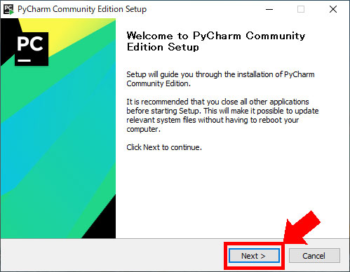
次に、インストール先を設定します。特に変更がなければデフォルトのフォルダのまま変更せずに「Next」をクリックします。また左下には必要な容量が表示されています。
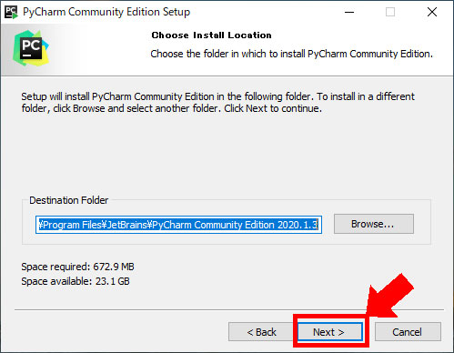
次に、オプションを設定します。特に必要がなければチェックしなくても構いません。ショートカットは作成しておいた方が便利かもしれません。設定が終わったら「Next」をクリックします。それぞれの項目は下記のような意味です。
- Create Desktop Shortcut：PyCharmのショートカットをデスクトップに作成する。
- Update PATH variable：PyCharmの実行ファイルがあるフォルダをPATHに追加する。
- Update context menu：フォルダを右クリックしてフォルダをプロジェクトとして開けるようにする。
- Create Associations：.pyの拡張子をPyCharmに関連付ける。
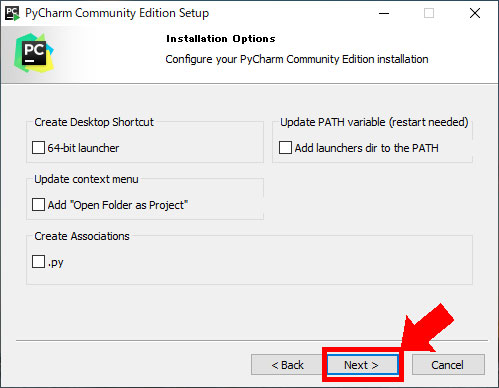
スタートメニューのフォルダを選択します。特に変更がなければデフォルトの「JetBrains」のままで「Install」をクリックしましょう。
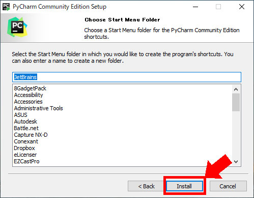
インストール完了です。「Finish」をクリックして閉じてください。
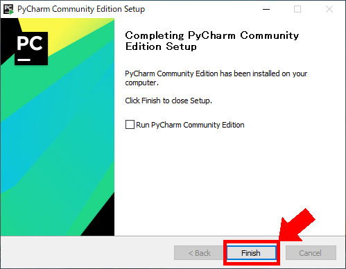
初回の環境設定
初回に起動すると、環境設定の画面が開きます。下記の画面は今までの設定を引き継ぐかどうかの設定画面です。今回は一番下の「Do not import settings」のまま「OK」をクリックします。
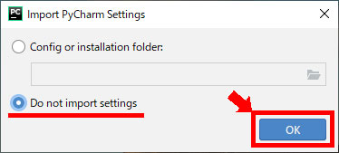
次はテーマの設定です。お好きな方のテーマを選択して「Next」へ進みましょう。
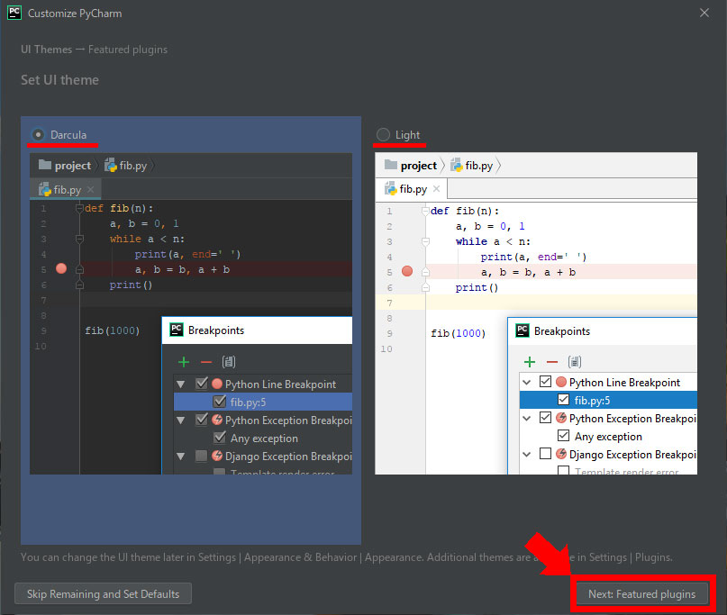
プラグインの設定です。プラグインは後からでも追加できるので、特に必要がなければ「Start using PyCharm」をクリックして起動させましょう。
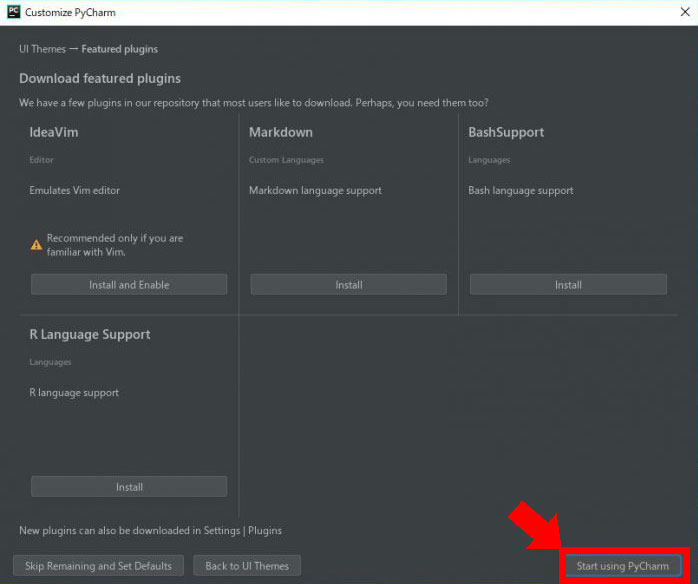
下記のような画面が表示されれば設定完了です。
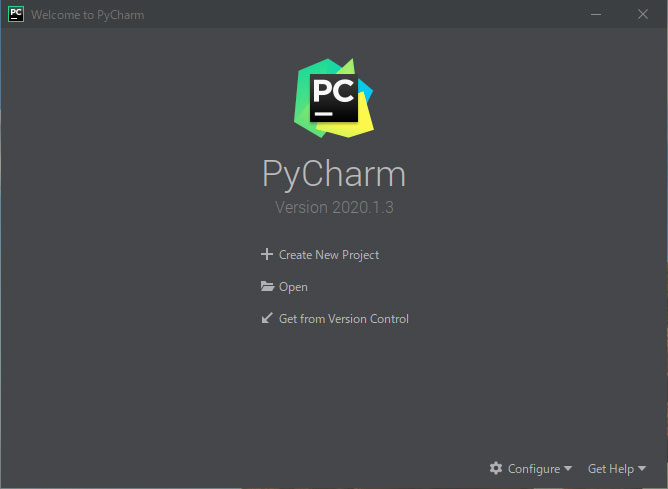
【ただいまコメントはご利用いただけません】
0 Comments